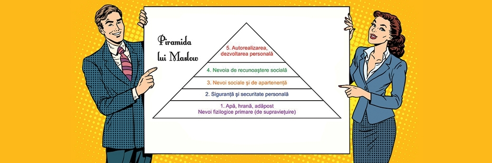

Maslow crede că singurul motiv pentru care oamenii nu se mișcă în direcția auto-actualizării este din cauza obstacolelor puse în calea lor de societate, mai ales printr-o educație deficitară ce nu poate schimba o persoană cu o slabă pregătire pentru viață într-o persoană cu o abordare pozitivă. Maslow e de părere că educatorii ar trebui sa fie răspunzători de potențialul pe care îl are un individ pentru a ajunge la auto-actualizare în felul său.

- Pe nivelul cel mai jos sunt plasate nevoile fiziologice.Nevoia de hrană, de apă, de adăpost, chiar nevoia de transport, adică acele nevoi care i-au forțat pe oamenii să lase deoparte instinctul de prădător, de animal, pentru a se asocia în vederea supraviețuirii. Fără satisfacerea nevoilor de bază, ființa umană încetează să subziste.
- Nivelul următor, al doilea, este dedicat așa numitor nevoi ce țin de siguranța personală.Nu are legătură cu nevoile fiziologice ? Nu, e mai mult. Pentru că siguranța personală transcende siguranța fizică, teama de a fi agresat, și face apel la siguranța financiară (un venit minim garantat, un plan de pensii decent), siguranța locului de muncă, siguranța care-ți permite acel confort psihic necesar funcționării eficiente, eliberat de angoasele traiului de zi cu zi.
- Al treilea nivel este dedicat nevoilor sociale, de apartenență. Omul simte acest imbold de a intra în relații cu ceilalți, de a încadra în grupuri sociale extinse. Și vorbim aici de grupuri religioase, organizații profesionale, echipe sportive, grupuri de simpatizați ai unei persoane sau cauze, sau chiar grupuri aflate la limita legii. În forma lor restrânsă, grupurile sociale ce satisfac nevoia de aparență sunt familia, partenerul de viață, colegii apropiați sau confidenții.
- Pe nivelul al patrulea, Maslow plasează nevoia de recunoaștere socială, încrederea în sine, respectul de sine. Jabberjaw, personaj făcut celebru de Hanna-Barbera avea o vorbă „No respect”, asta întrucât i se interzicea accesul doar pentru că era un „biet” rechin. Râdem, dar lipsa respectului poate da naștere cu vremea la sentimente de inferioritate, transformate în complex de inferioritate și inalienare socială.
- În sfârșit, ultimul nivel, al cincilea, este rezervat de Maslow dezvoltării personale, autorealizării Împlinirii potențialului, am spune astăzi. Hobby-urile, mai cu seamă cele costisitoare (plăcerea de a călători, de picta, de a învăța o limbă străină doar a citi un autor în original) se află în vârful ierarhiei piramidei nevoilor. Și e destul de greu de atins.